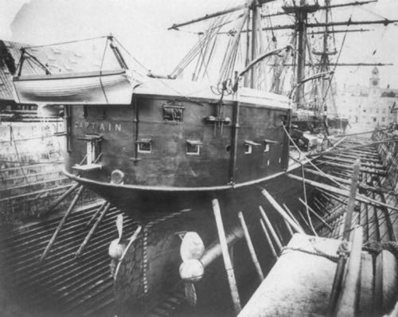

你好，欢迎来到《医学通识50讲》，我是薄世宁。
上一章，我们讲了改变医学的大医生。他们之所以能影响整个行业，不仅有技术贡献，更重要的是人格魅力和思维方式。
这节课开始，我们进入新的一章——医生的精进。看看医生的成长过程中需要闯过哪些关。这个题目，是为了致敬美国医生阿图·葛文德（Atul Gawande）。
医生需要打磨，他的成长需要思维训练，避免各种误区，要做到理性思考。了解医生的成长过程，那么医生的思维逻辑和做事方法，同样也适用于你所在的行业。
先问你个问题：你眼里的高手是什么样呢？
你可能会说，是专家主任，医术高明，名气大，写过无数论文；态度好，甚至能跟你拉拉家常；一个病能跟你说得头头是道，面面俱全。
这样的医生谁不喜欢呢？
但是我不得不告诉你，你眼里所有这些高手医生的线索都是片面的。医生不仅要有好医术、好态度。同时必须要经历很多关，避免很多思维误区。
医生成长要过的第一关，就是要做到少即是多。我先给你讲个关于军舰的故事。
复杂可能是隐患
1870年9月6日，英国皇家海军“船长”号铁甲舰，第一次航行就在比斯开湾遇到风暴沉没了，船上475人遇难。
这样一艘在当时最先进的军舰，为什么这么弱不禁风呢？
事故调查发现了原因：
首先，它用蒸汽机作为动力，但同时又加了风帆桅杆，这就是累赘。有蒸汽机这么强的动力，再加上风帆动力，这不是画蛇添足吗？
其次，整个军舰建造的每一道工序都很负责，工人唯恐用料不足，每个环节都超重。多加个螺丝钉，多一两半两不要紧，但是累积下来就不得了。
完工后发现，船的整体重量比设计多出了747吨。尤其是上部过重，导致重心上移。
遇到风暴，这艘号称当时最先进的铁甲舰，就这么沉了。

从此以后，蒸汽机动力的军舰都取消了风帆设备，只留下一根桅杆来发信号。每一个零件都必须严格按照设计的重量。因为血的教训告诉我们，复杂和多并不能带来完美，反而是隐患。
有一句话说得好，如无必要，勿增实体。这个原则在医学上就是医生精进要过的第一关：少即是多。
现代医学之父威廉·奥斯勒说过：
这句话有点夸张，但本意是告诉医生，要想精进，更多时候需要做减法。
多治疗不等于彻底治疗
高端、复杂的治疗未必是好的治疗，也不等同于彻底治疗。
所谓面面俱到的医生，未必是负责任和关心人的好医生。他可能只是为了满足病人的要求，或者他本身就存在着思维误区。
其实，不仅医生，所有的人都有误区。越是在涉及到生命的时候，这些误区就表现得越清晰。
第一个误区，是认为越多越安全。
比如，你会不会认为自重越大的汽车，越安全呢？你会不会觉得做完手术，最好多用几天抗生素，这样能预防感染呢？对于癌症，你会不会觉得切得越多，也就治得越彻底呢？
第二个误区，是把所有异常都当成病，必须纠正到正常值。
比如，父母年纪大了经常腿疼，不能爬山了，你会不会认为这就应该用药或者手术呢？血管狭窄了，你会不会觉得放个支架撑起来，就正常了呢？
第三个误区，就是把高消费当成好医疗。
治疗上喜欢用多的、用贵的、用进口的，小病大治，大病豪治。愿意多花钱，认为这就是对孩子好，对父母孝顺。至于会不会带来不好的效应，从来没仔细想过。
做到少即是多的三个方法
医生突破这些思维误区，才能成长，这就是医生精进的第一关。同样对病人来说，能明白少即是多，才是一名理性的好病人。
《英国医学杂志》（The BMJ）一篇文章指出，多数药物只对30%-50%的病人有效。
这就意味着，在能解决问题的最少的药物基础上，每增加一种不仅不会带来收益，反而会因为药物的副作用，引起医源性损害。
前面的课程《第22讲 医源性损害：制度才能让它最小化》专门讲了医源性损害，你可以去复习一下。
那么，怎么找到干预最小、效益最大的节点呢？这似乎是个难题。
我总结了三个解决方案，分享给你：
第一，寻找杠杆解。
杠杆解的意思就是挖掘出蕴藏的真正问题，找到一个关键节点，用最小的干预获得最佳的效益，而不是全面处理症状。
有这么一个故事。
20世纪90年代，纽约地铁曾经是犯罪高发场所。盗窃、抢劫、谋杀、性骚扰案件时有发生。
1994年，警察局长布拉顿（William Bratton）上任。地铁暴力必须遏制，他是怎么做的呢？
他并没有增加警力，也没有安装无数的探头，更没有在车厢里布置便衣警察，他主要做了一件事，就是在地铁出口抓逃票。
为什么抓逃票，就可以打击犯罪呢？
因为布拉顿发现，每7个逃票者当中就有一个在逃犯，每20个逃票者当中就有一个人携带了武器。遵守法律的人是不会逃票的，逃票的人当中肯定会有不安全因素。
布拉顿就这样找到了打击地铁犯罪的杠杆解。
不到两年，他就在没有增加预算和人力的情况下，把纽约市变成了全美最安全的大城市。他自己也在1996年被选为《时代》（TIME）杂志的封面人物。
医学上，面面俱到，给每个症状都开药的做法，是简单的叠加治疗，这叫做症状解。
比如，很多人会有多个健康问题，包括高血压、高血糖、高血脂、高尿酸，血管上出现斑块，有些人甚至已经开始出现心绞痛，经常觉得累、倦怠、心情不好。
可能还同时吃着降压药、降糖药、降尿酸的药，有的人还因为心绞痛放了心脏支架。
其实，这些问题吃药是没错的。但是如果只吃药，就是症状解。如果能够发现所有这些问题背后的节点，那就有利于寻找杠杆解了。
多数情况下，这些病人可能都面临肥胖和不运动的问题。
如果可以在吃药的基础上，对病人进行解释和开导，让他改变生活方式，减肥加运动加吃药，就是杠杆解。
这是少即是多原则的第一种解决方案，也就是用最关键的干预，获取最大效益。
第二，在效益相似情况下，寻求代价最小的解决方案。
比如，有的时候肢体因为严重感染、坏死，或者肿瘤，为了保命必须截肢。
但是从哪里截？截多少？这里面就有几个关键性原则：
尽可能保留肢体长度。
要有利于安装假肢。
如果手指必须截肢，尽可能保留拇指，因为拇指的重要性比其他四个指头加起来还多。如果是脚掌，则尽可能保留第一和第五脚趾。
这些原则，都是在保证生命安全这个效益的基础上，寻找有利于恢复肢体功能的方案，也就是代价最小的方案。
所以，用最小代价获得最大效益，是少即是多原则的第二个解决方案。
第三，终局思维。
意思是从终点出发考虑问题，来决定当下的选择。也就是“倒着思考”，根据结果决定治疗方案。
举个例子。
这些年甲状腺癌越来越多。那怎么治疗甲状腺癌呢？你会不会认为要赶紧手术呢？而且手术切得越大越好？
终局思维，就是首先要知道甲状腺癌到底是什么结局，这个病到底会不会影响生命和健康。
根据美国、日本、加拿大、波兰、芬兰和哥伦比亚等国家的尸检资料显示，高达35.6%的人尸检可以发现甲状腺癌，而且多数都是微小癌。
也就是说，微小甲状腺癌很常见，但是它并没有影响到健康和寿命。这就是终局。
知道了终局，也就知道如何治疗了。
对于微小甲状腺癌，动态观察就可以，如果确实需要手术的，仅仅切除病变那侧的甲状腺就够了，而不是都需要做全切。这就避免了只要听到是癌症，就立刻手术，而且切得越大越好这种传统的思路。
少即是多，带给病人的是更安全和更高效，带给医生的是不断精进和提高。
思考题
在你的行业里，有哪些少即是多的案例呢？欢迎在评论区留言，大家一起交流。
下节预告
我们不可能等到所有信息都准备齐全再决策，医生遇到这样的情况就更为极致。下一讲，我们说说医生如何在信息不完备的情况下，快速决策。